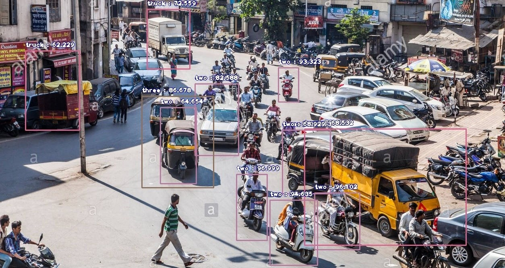
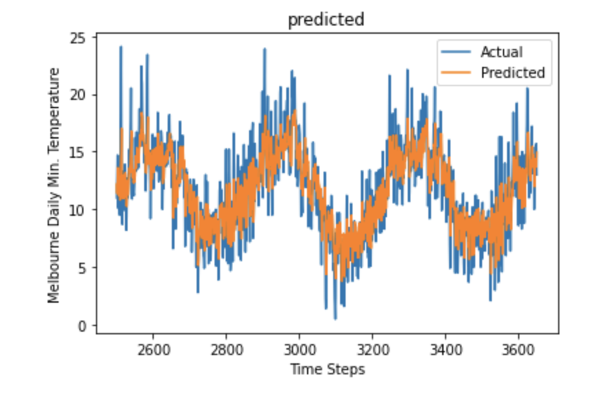
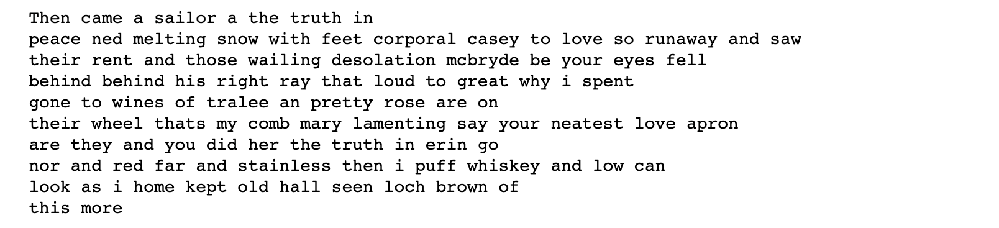
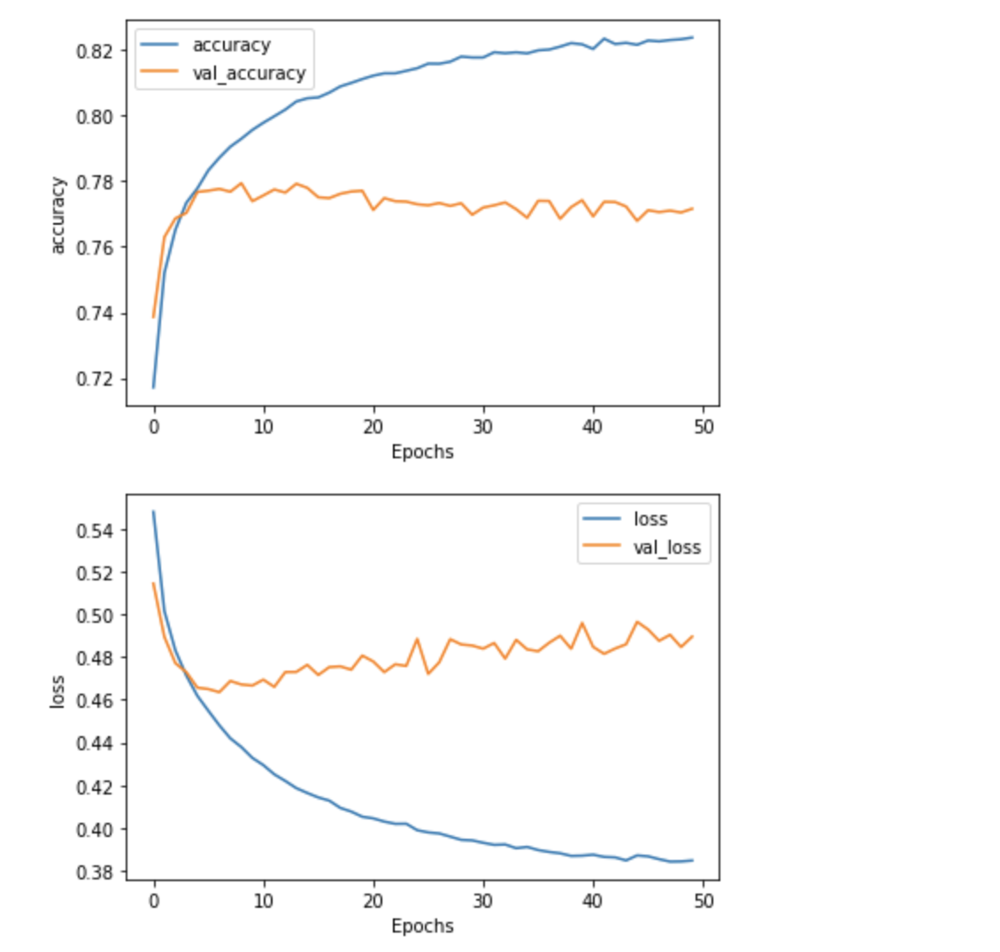

My Education
- Savitribai Phule Pune University
Bachelor of Engineering (B.E.) Computer Engineering.
GPA : 8.85 / 10. First Class with Distinction.
AUG 2016 - PRESENT
My Research Interests
- Machine Learning - Deep Learning
- Computer Vision
- Natural Language Processing (NLP)
- Sequence Models
- Cybersecurity
My Projects
Vehicle detection & Classification on Indian streets
Trained an object detection & classification model to detect vehicles on the crowded streets of
India and classify them into the following types :
- Car
- Bus
- Truck
- Two-wheeler (Mopeds & Motorbikes)
- Three-wheeler (Rickshaws & Tempos)
The model was trained using CCTV footage obtained from different streets in India
- highways, expressways, city streets, etc.
Tools & Frameworks used : TensorFlow, ImageAI, LabelImg
Result:
The model is able to detect and classify vehicles from both - images & videos with a
Mean Detection Probability - 90%!
Following is the output on an image never seen by the model :

As you can see, in such a crowded street, the model is able to detect a truck (even just the back of one),
a car, and multiple two-wheelers and rickshaws (with some probabilities over 96%!)
Temperature Forecasting using Deep Learning
Predicting Daily Min. Temperatures in Melbourne, Australia using a combination of
Convolutional and Recurrent Neural Networks.
Tools & Frameworks used : TensorFlow-Keras
Result:

A Mean Absolute Error (MAE) of just 1.78!
 View on GitHub
View on GitHub
Novel Poetry Generation using NLP
Generating a novel Irish poem using a set of Long Short-Term Memory cells (Recurrent Neural Networks).
Tools & Frameworks used : TensorFlow-Keras
Result:

"Then came a sailor" was the only set of words I provided to the trained model as a starting line.
The next 100 words have been generated by the network!
P.S. If you look closely, there are very less repetitions in the predicted words.
It's quite common to see a large number of repeated words in an NLP model prediction.
Such best results were achieved after carefully tuning the model and the hyperparameters.
View on GitHub
Personal Website
You remember 10% of what you read, 20% of what you see/hear.
And 70% of what you do. Currently, learning web dev while building my personal website.
Languages used : HTML5 & CSS3
Want to understand recursion?
Head over now ⤵️
Decoding Karan Acharya.
A comparative analysis of different Keras layers to detect sentiment from tweets
Performed a comparative study of the effects of different Keras layers - LSTMs, GRUs and Conv1D on
the Sentiment140 dataset with 1.6M tweets.
The following combinations of the layers were studied and those many number of models were built and used to predict the sentiment :
- Using only the Keras Embedding & GlobalAveragePooling1D layer
- Embedding with a Bidirectional LSTM layer
- Embedding with a Bidirectional Gated Recurrent Unit (GRU) layer
- Embedding with only a pair of Conv1D and MaxPooling1D layer
- Embedding with a pair of Conv1D and MaxPooling1D layer and 1 Bidirectional LSTM layer
- Adding Dropout regularisation to the previous combination.
Tools & Frameworks used : TensorFlow-Keras
Result:

The best results were achieved on the very last combination.
This was the only model in which the validation loss did not increase sharply i.e
the confidence in predictions did not drop drastically over the range of the epochs.
View on GitHub